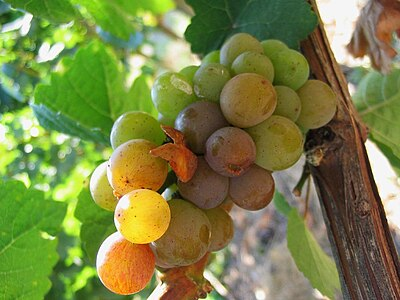

The world's most planted white grape — a blank canvas that expresses terroir and winemaker technique. Unoaked (Chablis, Mâcon): crisp, mineral, green apple, citrus. Oaked (Meursault, California): butter, vanilla, hazelnut, tropical fruit. Malolactic fermentation converts sharp malic acid to softer lactic acid — creating the creamy, buttery texture associated with California Chardonnay.
Crisp, high-acid, aromatic. Loire Valley (Sancerre, Pouilly-Fumé): flinty, herbaceous, gooseberry, citrus. New Zealand Marlborough: intensely aromatic, passionfruit, fresh-cut grass, grapefruit. Sémillon blended in Bordeaux Blanc. Pyrazines (bell pepper aroma) are the defining aromatic compound. Fermented cold in stainless steel to preserve aromatics. Drink young.

One of the world's greatest white grapes — dramatically underappreciated. Can range from bone-dry (Alsace, Mosel Kabinett) to intensely sweet (Trockenbeerenauslese, Eiswein). High acidity provides structure and aging potential — great Rieslings age 20–30+ years. Floral (jasmine, white flowers), citrus, peach, petrol note (TDN compound) in aged wines. Germany's Mosel produces ethereal, low-alcohol examples.
Italian Pinot Grigio: light, crisp, neutral — lemon, almond, subtle pear. Designed for easy drinking, not complexity. Often produced in massive volumes with mediocre quality. Alsatian Pinot Gris (same grape): rich, full-bodied, off-dry, honeyed peach and spice — completely different. Oregon Pinot Gris: between the two styles. The grape's skin has gray-pink color — some winemakers make orange wine from it.
One of the most perfumed grapes in existence — litchi, rose, ginger, Turkish delight, jasmine, and orange blossom. Low acidity. Naturally high alcohol. Thick-skinned grapes produce a slightly pink-tinged wine. Alsace is the spiritual home. Also excellent in South Tyrol (Italy), Germany, and New Zealand. Best paired with spicy Asian food — the sweetness and aromatics complement chili heat beautifully.
Spain's great white grape, grown in Galicia's Rías Baixas region — influenced by Atlantic Ocean. High acid, low alcohol, intense peach, apricot, citrus, and saline minerality. The proximity to the sea gives a distinctive briny quality. Portugal's version is called Alvarinho (Vinho Verde region). Exceptional with seafood — particularly shellfish, white fish, and octopus. The wine of Galicia's seafood culture.
Austria's signature white grape. Dry, high acid, medium body with white pepper (rotundone), lime, green herbs, and pea shoot notes. The pepper spice is the defining characteristic — distinct from any other white wine. Ranges from light and simple (Steinfeder) to rich and age-worthy (Smaragd, 13%+ ABV). Excellent with asparagus and artichoke — notoriously difficult pairings for other wines.
Aromatic, full-bodied, low acid, typically dry white with peach, apricot, honeysuckle, and orange blossom aromas. Northern Rhône appellation Condrieu is its spiritual home. Nearly extinct in the 1960s (only 8ha planted), now cultivated globally. Often co-fermented with Syrah in Côte-Rôtie — the small addition of Viognier stabilizes color and adds aromatic complexity to the red wine. Rich texture from high glycerol.